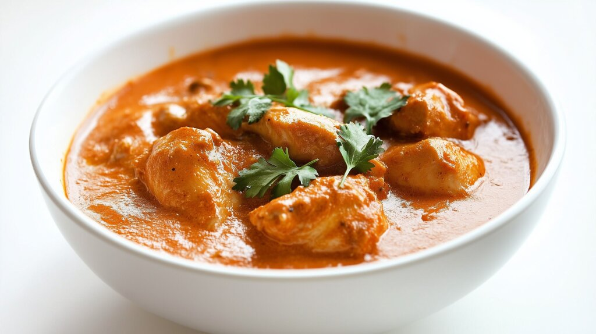

Tikka Masala
Home

Description
Tikka Masala is a popular indian-inspired dish consisting of bits of chicken in a creamy and spicy sauce.
Ingredients
Chicken prep:
- 4 pieces of chicken breast, sliced into big chunks
- 3 tbs of cooking oil
- 3 cloves of garlic, shredded
- 2 tsp of garam masala
- 2 tsp of turmeric
- 1 tsp of salt
- 1 tsp of chili powder
Sauce:
- 1 big piece of yellow onion, roughly chopped
- 1 piece of green chili pepper, sliced
- 3 cloves of garlic, shredded or chopped
- 1 red bell pepper, roughly chopped
- 1 tbs ginger, shredded
- 1 tbs of tomato paste
- 1 tsp of turmeric
- 1 tbs of garam masala
- 1 tsp of chili powder
- 1 can of crushed tomatoes, à 400 g
- 3 dl of water
- 2 dl of heavy cream
- 1 tbs of salt
- 1 tsp of sugar
- 1 tsp of black pepper
Serve with:
Steps
- Dice the chicken in rough pieeces. Season with spices, garlic and salt. Roast in oven at 200 degrees (Celsius) for about 15-20 min. Let it rest.
- Fry the onion, chili pepper, garlic and ginger at medium heat for a few minutes.
- Stir the tomato paste on top and fry for 1 min.
- Add spices, tomatoes, water, salt, sugar and black pepper. Boil for at least 10 min on medium heat.
- Pour the cream.
- Using a hand mixer, mix the ingredients and boil for an additional 10 min.
- Chop the bell pepper in rough pieces and add to the pot. Add the chicken.
- Serve with rice and cilantro!